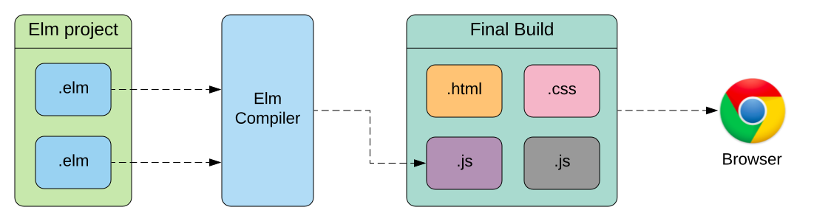

JavaScript is undisputedly the most commonly used and updated technology in web development today. From frontend to backend it has many tools, libraries and frameworks that make working with it the standard for most devlopers and companies. Despite this, it has many shortcomings and complexities. There are many technologies out there today that let you write code in a completely different language or a dialect of JavaScript, and then compile that into JavaScript code. These technologies are seeing adpotion increase very much.
Compile to js languages
There are many languages that have the compile to js functionality. The most popular of them are JavaScript supersets or dialects such as TypeScript, Coffescript, etc. These do not require developers to learn much more than what they already know of JavaScript and its frameworks, and some of them also work in frameworks such as React. They usually serve the functions of making code cleaner and easier to comprehend, and making syntax less complex, thereby increasing efficiency.
There are many programming languages or compilers for those languages that are independent of JavaScript that let you write code in that specific language and then compile it to JavaScript. The most notable ones are Elm, ClojureScript, and Dart. They are commonly used when building more powerful and complex web applications than normal, because of their object-oriented nature or friendly syntax.
 Diagram of how Elm compiles to JavaScript